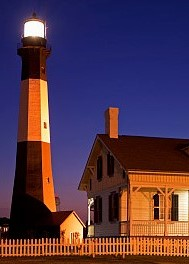
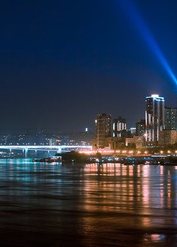

■大观天地
著名城市的梦幻夜景
-

斯特拉斯堡市场的圣诞夜
圣诞市场标志着Advent的开始，木制小屋聚集在一起，出售当地的手工艺品，热葡萄酒和节日欢乐。
木制小屋 热葡萄酒 节日 -

港口城市的宁静之夜
夜是宁静的，也是喧嚣的，并有一种神秘的美。当夜幕降下来时，仿佛大自然就化身为一名诗人，将大地蒙上一层神奇的外衣，充满诗情画意...
宁静 神秘 诗情画意 -
下班回家的行人
暖黄的路灯氤氲着一种舒适的氛围，上班很累，一天的工作让人疲惫不堪，但一想到温暖的家，便一切倦困都烟消云散...
疲惫 温暖 路灯氤氲 -

海湾夜景一瞥
蓝色夜空下雄伟壮观的跨海大桥。蓝白色的组合竟也如此震撼，哪怕是站在桥下，也不由得想起卞之琳的诗：你站在桥上看风景...
雄伟壮观 跨海大桥 震撼
■城市故事
夜晚的都市传说
- 夜话奇谭 夜晚鬼故事_都市之间
- 成都夜间公交故事:都市入睡 行者不眠
- 都市奇缘 路边奇遇行记
- 我存在大城市的夜晚 美文故事 散文日志随笔-
夜景专区
夜色未央，风景万象
夜色未央，风景万象